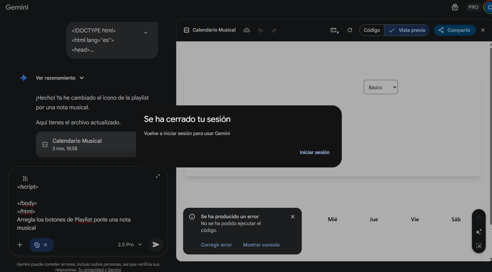

Calendario Musical
Para esta aplicación quería hacer un calendario donde tuvieses canciones nuevas todos los días, y dependiendo del mes, por ejemplo octubre que sea más de halloween o rockero, además de poder tener un muñequito que baile contigo y que sea personalizable, el problema está en que desde hace unas 2 semanas mas o menos han estado habiendo problemas con la IA Gemini.
Un problema grave es que cada cierto tiempo la IA se colapsa y te muestra una pantalla en la que te indica qué tu sesión se ha cerrado y debes iniciar sesión de nuevo.

No llego a entender porqué pasa esta situación del todo, pero esto me frustra ya que me parece que la IA de Gemini es una herramienta estúpenda, ya que te da una herramienta y un entendimiento que otras no tienen. Pero al mismo con estos errores graves que tiene me frustra mucho, y he intentado usar otras herramientas como Perplexity, Chat GPT y Claude, pero no he podido sacar todo su jugo en esta práctica.
Ya que me hacian cosas que no eran, algunos de los ejemplos son:
Claude:

Perplexity:

Esto en un futuro espero arreglarlo y no quedarme tan pillada de tiempo con esto, y intentar que salga bien, lo siguiente es que el primer prompt que tuve con gemini es:
<< Actúa como un desarrollador con más de 30 años de experiencia en el desarrollo de aplicaciones web. Haz una aplicación en HTML, CSS y JavaScript puro (Vanilla javascript), no uses frameworks para javascript, ni para CSS, para
Para crear un calendario donde por cada día te recomiende una canción de cualquier género como por ejemplo jazz, pop, eurobeat, jpop, etc… donde al pinchar en el día te aparezca un reproductor con la canción de archivos locales, y puedas agregarlo a la lista, además que al iniciar te indique varios generos de música para la recomendación como por ejemplo que puedas seleccionar Pop, Jpop, Eurobeat, Jazz, Musica Lofi, Reguetón, Rock, Metal, musica clasica, Hip Hop, punk etc.. Y dependiendo de la música que toque que ponga un fondo dedicado a ello. Y que haya un apartado de "Visita diaria" donde al darle click te aparecerá una cancion que esté de moda en ese momento, además la tematica del calendario irá en funcion al mes, si es Octubre serán canciones de todo tipo pero algunas más dirigidas a halloween, si es diciembre habrán canciones que sean más de navidad etc. .>>
Lo que el primer resultado fue:


Cosa que estuvo bastante bien, pero faltaban cosas, y habian bastantes errores que habían que arreglar.
Conforme le iba indicando nuevos prompts, me iba haciendo otras cosas, por ejemplo no me gustó del todo ese resultado así que se lo volví a indicar el primer prompt y me dio otro resultado:

Al principio pensaba que se podría coger de Youtube o de Spotify la música pero después se especificó que fuera en local, por lo que tuve que modificar bastante la aplicación, algunos de los prompts son:
<< Al abrir las "Estadisticas del Mes" no se puede cerrar, por lo que te quedas ahí sin poder hacer cosas >>
<< Que haya una opción en la que puedas cambiar a distintos temas, un tema será el Básico, Oceanico, Bosque, Playa, Retro, con distintas fuentes dependiendo de cada tema >>
<< cuando suene la musica del calendario que haya un monigote básico(solo cabeza como un circulo, y 5 palos, imitando el cuerpo, brazos torso y piernas) que baile cuando esté puesta la música y cuando no que esté sentado >>
Y algunas de las capturas son:


Con estos se me habia ocurrido que se personalizara el muñeco pero he estado teniendo problemas al implementarlo, al igual que otras opciones como Logros, playlist, estadisticas y el mismo vestuario.
Ya que no he parado de tener problemas, por ejemplo lo que comenté al principio, o otros como por ejemplo me cambiaba completamente la aplicación, o me lo cambiaba por una carta para pedir una beca, cuando quería arreglar un bug en la aplicación.


Y esto llega a ser muy frustrante, ya que al querer arreglar un error, la IA se vuelve loca y te cambia completamente lo que quieres por otra cosa que no tiene sentido alguno.
Después de mucho luchar contra la IA mas o menos he tenido una version estable, pero al querer cambiar los iconos de playlist, logros, estadisticas y vestuario no me me funciona, se bugea la IA y no me lo quiere hacer. Pero bueno, la aplicación más estable es la siguiente: